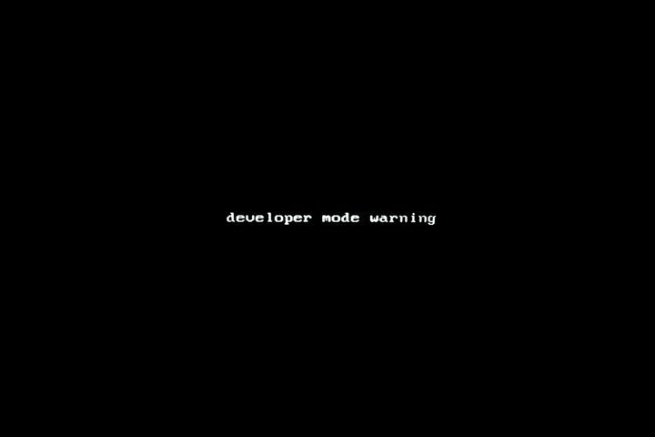
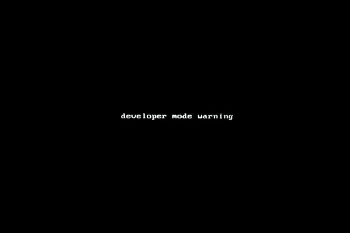

Firmware Utility Script, on device with stock firmware and WP enabled
The ChromeOS Firmware Utility Script simplifies the most common functions most users need when interacting with the firmware on their ChromeOS device. It can be run from ChromeOS, or any Linux which has a full Bash shell (so LibreELEC users need to boot a Ubuntu Live USB (eg) and run it from there). Currently, it allows the user to:
At startup, the Firmware Utility Script will automatically detect the device, OS, and current firmware details, and show a customized menu options based on this information. Some options may be greyed-out/disabled for some devices. Because most of these operations are being done to normally read-only parts of the firmware, the firmware write protect will need to be removed for most of the script's functions. This is documented for each function below, and the script will likewise check and display the write-protect state for each function that requires it to be disabled.
cd; curl -LO mrchromebox.tech/firmware-util.sh && sudo bash firmware-util.sh-k to the curl command and script command to bypass SSL certificate checking as so:cd; curl -LOk mrchromebox.tech/firmware-util.sh && sudo bash firmware-util.shREALLY READ THIS: Under ChromeOS, this script must be run from a crosh shell (logged in, normally or as a guest: CTRL+ALT+T, type 'shell', press enter) or VT2 (from login screen: CTRL+ALT+F2, login 'chronos'); it cannot be run from a crostini (penguin) terminal as that is a virtualized container and lacks the necessary access to read or modify the firmware.


In the screenshots above, only the script functions available for the device and current firmware are enabled (cyan text); unavailable functions are in grey. Features which require the firmware WP to be disabled are clearly labeled as such, along with the ability of that function to be used based on the current WP state.
This option performs two simple tasks: it sets the crossystem boot flag necessary to enable Legacy Boot mode, and it installs an RW_LEGACY firmware update appropriate for the device. Users will have the option to set the default boot device (internal storage [default] or USB/SD); Haswell/Broadwell Chromebox users will also have the option to enable "headless" (no display attached) booting, which is really only useful if you're going to run the box without a display and connect remotely (eg, via ssh). Changing either of these options requires re-running this script function.
After updating the RW_LEGACY firmware, Legacy Boot Mode can be accessed via [CTRL+L] on the Developer Mode boot screen. It can also be set as the default by changing the GBB Flags via 'Set Boot Options' feature below.
Requires firmware write-protect disabled: NO
As this is a full replacement firmware, the script will offer users the option to back up their stock firmware on USB (required if the script is not capable of providing a stock firmware image).
As Chromeboxes store their Ethernet MAC address in the RO_VPD (read-only vital product data) region of the stock firmware, the script will extract that region from the stock firmware and inject it into the new firmware ensuring the unique MAC address isn't lost. It will also persist the VPD region across firmware updates, so this is all transparent to the user.
After installing the UEFI (Full ROM) Firmware, your device will boot directly in UEFI Mode; ChromeOS will not be able boot. Your ChromeOS device is now a "regular PC," and you can install the OS of your choice without any special instructions.
Requires firmware write-protect disabled: YES
This script function allows one to change the timeout for the Developer Mode boot screen (2s or 30s) and the default boot target (ChromeOS or Legacy Boot Mode). Setting the boot target to Legacy Boot removes the requirement of pressing [CTRL+L] at boot; instead, you must press [CTRL+D] to boot ChromeOS. This function is just a wrapper around the gbb_utility application built into ChromeOS that will read the GBB region from the stock firmware, set the GBB flags based on user input, and write it back to flash. For all options except 'Factory Default,' the GBB flags will also be set to force-enable legacy booting (GBB_FLAG_FORCE_DEV_BOOT_LEGACY), which overrides the crosssytem dev_boot_legacy flag, and to force-enable Developer Mode (GBB_FLAG_FORCE_DEV_SWITCH_ON), which prevents exiting Developer Mode via the spacebar (either accidentially or intentionally).
Regardless of which default boot mode is selected, one can always override the default via keystroke: [CTRL+D] for ChromeOS Developer Mode, or [CTRL+L] for Legacy Boot Mode.
Note: Whenever the GBB Flags are set to anything besides the Factory Default, their current value will be displayed in a small black box in the upper-left corner of the Developer Mode boot screen, along with other some other firmware/OS-related info. This is normal and no cause for alarm, though you'll need to re-run the script and reset them to the Factory Default before exiting Developer Mode (should you want to do so).
After setting the Boot Options / GBB flags, the boot timeout and default OS will be whatever you selected, and can be changed at any time by re-running this script function.
Supported Devices: All ChromeOS devices running stock (or stock + RW_LEGACY) firmware
Requires firmware write-protect disabled: YES
This script function is also just a wrapper around the gbb_utility application built into ChromeOS. It will read the GBB region from the stock firmware, set the HWID based on user input, and write it back to flash. The only time this function is needed is if one flashed a generic recovery image firmware (aka a shellball ROM) from a source *other than this script* instead of restoring a backup of their own device firmware. Shellball ROMs extracted from a recovery image (or obtained from other sites/sources) have a generic HWID embedded which ChromeOS does not recognize as valid for purposes of OS and firmware updates (among other things), so it's necessary to set a valid one. HWIDs aren't unique, so any valid one will do.
Note: If you restored your stock firmware using the option from this script, it is not necesary to set the HWID afterward.
After setting a valid HWID, simply reboot and ChromeOS updates should work normally.
Supported Devices: All ChromeOS devices running stock (or stock + RW_LEGACY) firmware
Requires firmware write-protect disabled: YES
This function removes the ChromeOS bitmap (image) files used to display the Developer Mode and Recovery boot screens, leaving you with a simple black screen with white terminal text -- much easier on the eyes, esp when booting in a darkened environment.
 becomes 
becomes Note: ChromeOS updates might occasionally restore the missing bitmaps, so if you're still running ChromeOS you may need to re-run this function as needed.
Credit to Joshua Stein for bringing this to my attention via his blog which I stumbled upon somehow.
Supported Devices: All pre-Skylake/pre-ApolloLake ChromeOS devices running stock (or stock + RW_LEGACY) firmware
Requires firmware write-protect disabled: YES
This script function reverses the function above :)
Supported Devices: All pre-Skylake/pre-ApolloLake ChromeOS devices running stock (or stock + RW_LEGACY) firmware
Requires firmware write-protect disabled: YES
This script function will restore the stock BOOT_STUB for any device running a modified BOOT_STUB firmware. It will first attempt to use the built-in backup created by this script, and failing that, will download the firmware from a recovery image (a shellball ROM) and extract the stock BOOT_STUB from that. This option is only displayed on devices running BOOT_STUB firmware.
After restoring the stock BOOT_STUB, you will need to reboot and reinstall ChromeOS from the recovery media. You can also install the RW_LEGACY firmware if you're switching to it for some reason.
Supported Devices: All Haswell, Broadwell, and Baytrail ChromeOS devices running modified BOOT_STUB firmware (whether installed from this script or another)
Requires firmware write-protect disabled: YES
This script function will restore the stock firmware, preferably from a backed-up copy on USB. For most devices, if a user-provided backup is not available, the script will download the firmware from a recovery image (a shellball ROM). For Chromeboxes, if the current fimware contains an embedded VPD region, it will be extracted and merged before flashing. These (device-specific) shellball ROMs have been modified to include a valid hardware ID (HWID), so ChromeOS updates will work normally. Support for flashing shellball ROMs for additional devices is planned for the near future.
After restoring the stock firmware, you will need to reboot and reinstall ChromeOS from the recovery media. After booting ChromeOS, you will need to re-run this script and reset the Boot Flags/GBB Flags in order to exit Developer Mode and fully return to stock.
Supported Devices: All non-EOL ChromeOS devices running non-stock firmware
Requires firmware write-protect disabled: YES
The Reboot and Power Off options are (hopefully) sufficiently self-explanitory :)
If running UEFI Full ROM firmware, there will be an additional option to clear the NVRAM. This will delete all bootorder entries stored in NVRAM, and they will be created again on the next boot (or next time grub is updated).
The source for the Firmware Utility Script (as well as all helper/accessory scripts) can be found on MrChromeboxes 'scripts' github repository. Any issues, feature requests, and/or improvements can be reported via the issue tracker or a pull request.